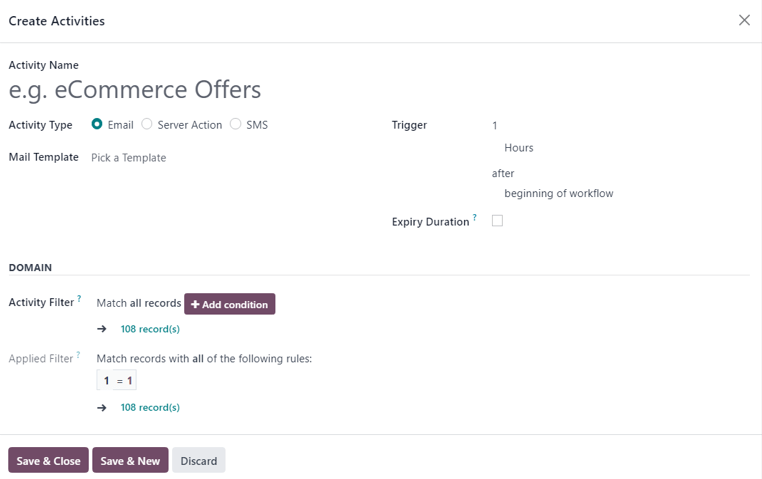
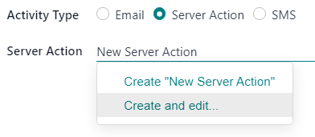
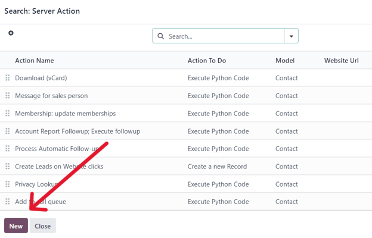

Campaign workflow activities¶
When creating a marketing campaign in the Marketing Automation app, users can plan marketing activities that can be triggered when certain actions or inactions occur. These can be activities such as, automated emails, SMS, or internal server actions.
Add workflow activities¶
To add workflow activities to a marketing campaign, navigate to the bottom of a pre-existing or new campaign detail form, beneath the target audience configuration fields, and click Add new activity.
Doing so reveals a Create Activities pop-up window. This pop-up window is a blank activity template, where specific parameters can be set for that particular activity.
First, enter a name for the activity in the Activity Name field. Then, proceed to configure the following options.
Once ready, either click: Save & Close to save the activity and close the pop-up form, Save & New to save the activity and instantly create an additional activity on a fresh Create Activities pop-up form, or Discard to delete the activity.
Activity types¶
Then, select the Activity Type. Choose between Email, Server Action (an internal action within the database), or SMS.
The field below the Activity Type changes, depending on the chosen Activity Type.
Email activity¶
If Email is the Activity Type, the option to choose a premade/pre-configured Mail Template becomes available. A mail template can also be created on-the-fly, as well.
To create a new template directly from the Mail Template field, start typing the title of the new template into the blank field beside Mail Template, and select Create and edit… to reveal a Create Marketing Template pop-up window.
In that pop-up window, proceed to create and configure the new email template.
Server action activity¶
If Server Action is the Activity Type, the option to choose a specific Server Action (e.g. Message for sales person, Create Leads on Website clicks, etc.) becomes available.
The option to create a new server action directly from the Server Action is also available. To do that, type in the name of the new action, then click Create and Edit… from the drop-down menu.
Or, as an alternative, click the empty Server Action field to reveal a drop-down menu, and select Search More… to reveal a Search: Server Action pop-up window, containing all the pre-configured server action options to choose from.
To create a new server action from this pop-up window, and click New.
Either option reveals a blank Create Server Action pop-up, wherein a custom server action can be created and configured.
SMS activity¶
If SMS is the Activity Type, the option to choose a premade/pre-configured SMS Template becomes available. A SMS template can also be created on-the-fly directly from this field.
To create a new template directly from the SMS Template field, start typing the title of the new template into the blank field beside SMS Template, and select Create and edit… from the drop-down menu.

Doing so reveals a Create Marketing Template pop-up window. In that pop-up window, proceed to create and configure the new SMS template.

Trigger¶
The Trigger field on the Create Activities pop-up form allows users to choose when the designated workflow activity should be triggered.
Start by selecting a number in the top field. In the next Trigger field, designate if it should be Hours, Days, Weeks, or Months. Then, click the final field, where it reads beginning of the workflow be default to reveal a a drop-down menu of other trigger options.

The trigger options are as follows:
beginning of the workflow: the activity will be triggered at the previously-configured time after the beginning of the entire workflow.
another activity: the activity will be triggered at the previously-configured time after another specific activity in the workflow.
Mail:opened: the activity will be triggered at the previously-configured time if the sent mail in the workflow has been opened by the recipient.
Mail:not opened: the activity will be triggered at the previously-configured time if the sent mail in the workflow has not been opened by the recipient.
Mail: replied: the activity will be triggered at the previously-configured time if the sent mail in the workflow has been replied to by the recipient.
Mail: not replied: the activity will be triggered at the previously-configured time if the sent mail in the workflow has not been replied to by the recipient.
Mail: clicked: the activity will be triggered at the previously-configured time if the sent mail in the workflow has been clicked by the recipient, after it’s been opened.
Mail: not clicked: the activity will be triggered at the previously-configured time if the sent mail in the workflow has not been clicked by the recipient, after it’s been opened.
Mail: bounced: the activity will be triggered at the previously-configured time if the sent mail in the workflow has been bounced back for any reason.
SMS: clicked: the activity will be triggered at the previously-configured time if the sent SMS in the workflow has been clicked by the recipient, after it’s been opened.
SMS: not clicked: the activity will be triggered at the previously-configured time if the sent SMS in the workflow has not been clicked by the recipient, after it’s been opened.
SMS: bounced: the activity will be triggered at the previously-configured time if the sent SMS in the workflow has been bounced back for any reason.
Expiry duration¶
Next, on the Create Activities pop-up form is the Expiry Duration option.
The Expiry Duration checkbox provides the option to configure the activity to stop the actions after a specific amount of time (after the scheduled date).
When selected, a Cancel after field appears, in which the number of Hours, Days, Weeks, or Months can be configured for the actions to cease after the initial date.
Activity and applied filters¶
Moving down into the Domain section of the Create Activities pop-up form, there is the Activity Filter and Applied Filter fields.
The Activity Filter field provides the option to configure a recipient filter domain that applies to this activity and its child activities. In works in the same fashion as a typical target audience filter.
To add an activity filter, click Add condition in the Activity Filter field and proceed to configure a custom activity filter equation rule(s).

This option is not a required field. If left alone, the activity applies to all records related to the target audience of the overall campaign.
See also
The Applied Filter field is non-configurable. It’s simply a summary of when the activity will be performed, only if it satisfies the specified domain (e.g. the rules configured in the Activity Filter field).
Note
After the activity’s settings are fully configured, click Save & Close to save the activity and return to the marketing automation campaign form, Save & New to save the activity and immediately create another one in a fresh Create Activities pop-up window, or Discard to delete the activity and return to the marketing automation campaign form.
Workflow activity¶
Once an activity is created and saved, it appears as an activity card in the Workflow section, located at the bottom of the marketing automation campaign form. The analytics related to each activity is displayed as a line graph.

The configured Trigger time for that activity can be found to the left of the Workflow Activity card in the Workflow section.
Once the activity has been triggered, a figure representing the number of Success or Rejected activities will be displayed to the right of the graph.
Tip
If the Activity Type of the activity is set to Email or SMS, there are more in-depth analytics beneath the activity graph data, detailing how many messages have been Sent, and what percentage of those have been Clicked, Replied to, or Bounced.
Child activities¶
There is also the option to add a child activity by clicking Add child activity, located at the bottom of each activity block in the Workflow section of a marketing campaign form.
Child activities are sub-activities that are connected to and triggered by the activity above it, which is known as its parent activity. A child activity is easy to recognize, as its slightly indented beneath its parent activity.
Odoo provides a number of triggering options to launch a child activity - all of which depend on the trigger configurations related to its parent activity. Under the desired parent activity, hover over Add child activity, to reveal a menu of child activity trigger options.
Select any of the following child activity triggers:
Add Another Activity: instantly adds another activity.
Opened: the next activity will be triggered if the recipient opens the mailing.
Not Opened: the next activity will be triggered if the recipient does not open the mailing.
Replied: the next activity will be triggered if the recipient replies to the mailing.
Not Replied: the next activity will be triggered if the recipient does not reply to the mailing.
Clicked: the next activity will be triggered if the recipient clicks on a link included in the mailing.
Not Clicked: the next activity will be triggered if the recipient does not click on a link included in the mailing.
Bounced: the next activity will be triggered if the mailing is bounced (not sent).
Once a trigger is selected, the user can configure the child activity the same way they would for a regular workflow activity.
See also